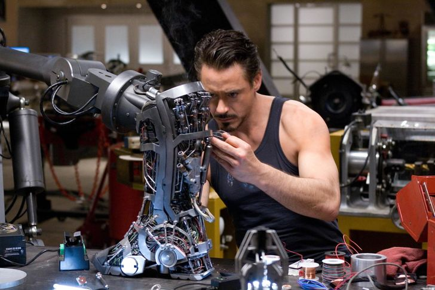

Ensino médio
- UNASP · Centro Universitário Adventista de São Paulo
- 2024 a 2026 · concluído em 2026
02 / 05 · Sobre mim
Sou estudante de Tecnologia da Informação e ainda estou descobrindo até onde a área vai. Por enquanto, isso significa escrever código, experimentar com microcontroladores e aprender uma ferramenta nova sempre que um projeto pede.
01 Minha trajetória
Meu interesse pela tecnologia começou ainda na infância, principalmente por assistir aos filmes da Marvel e conhecer as invenções do Tony Stark. Sempre achei fascinante a maneira como ele utilizava a tecnologia para criar coisas incríveis, o que despertou minha curiosidade pela área. Ao longo do curso técnico, tive a oportunidade de conhecer diferentes áreas da Tecnologia da Informação, experimentar novas ferramentas e desenvolver projetos na prática. Sempre procurei me dedicar às atividades e aproveitar as oportunidades de aprendizado, o que contribuiu muito para meu desenvolvimento e para a evolução dos meus conhecimentos durante esses três anos.

02 Formação
Ao longo do curso, passei por linguagens como HTML, CSS, JavaScript, Python e C, trabalhei com banco de dados, criei interfaces no Figma e conheci o lado físico da tecnologia com Arduino e ESP32. Essa mistura me mostrou que gosto tanto de pensar em como algo aparece na tela quanto em como funciona por dentro.
Foi também no ambiente acadêmico que participei do Readapt, uma proposta de tecnologia educacional que reúne software e hardware para apoiar crianças com dificuldades de leitura e escrita.
Durante o curso, tive contato com diferentes áreas da Tecnologia da Informação e desenvolvi projetos que me ajudaram a colocar em prática os conhecimentos adquiridos. Entre as disciplinas de que mais gostei estão PIDS (Projeto Integrado de Sistemas), principalmente por sua relação com o desenvolvimento do TCC, Robótica, Desenvolvimento de Jogos e Desenvolvimento de Sites.
Também considero que todos os professores da área de TI tiveram importância na minha formação, pois cada um contribuiu de alguma maneira para meu aprendizado e desenvolvimento.
03 Interesses
Em vez de escolher uma só, prefiro entender como elas se conectam.
Lógica, linguagens e a construção de aplicações, do que aparece na tela ao que roda por trás dela.
JavaScript · Python · C · Node.js
Como as pessoas usam aquilo que é construído: organização, clareza e o caminho até cada informação.
HTML · CSS · Figma
O lado físico da tecnologia: microcontroladores, placas e protótipos que saem da tela.
Arduino · ESP32 · ESP32-CAM
Organizar, guardar e consultar informações para que um sistema funcione de verdade.
MySQL · Firebase
04 Conhecimentos e tecnologias
Organizado por área. Cada item mostra um nível honesto de familiaridade — sem porcentagens.
Conheço os fundamentos e já pratiquei.
Uso com mais autonomia em exercícios e trabalhos.
Já utilizei na construção de um projeto.
Desenvolvimento front-end
A camada que as pessoas veem e usam.
Desenvolvimento back-end
Lógica, regras e o que roda por trás.
Banco de dados
Onde a informação fica guardada.
Hardware e sistemas embarcados
Microcontroladores, placas e protótipos físicos.
Design e interfaces
Planejar telas antes de construir.
Ferramentas de desenvolvimento
O ambiente de trabalho do dia a dia.
Produtividade
Documentos, planilhas e organização.
05 Próximos passos
Conquistar uma oportunidade como estagiária ou funcionária em uma área de Tecnologia da Informação.
Cursar uma graduação para aprofundar meus conhecimentos e me preparar para o mercado de trabalho.
Meu principal objetivo é conquistar uma oportunidade no Bradesco, seja como estagiária ou funcionária, em alguma área relacionada à Tecnologia da Informação. Tenho interesse em seguir caminhos como Gerência de Projetos de TI, Engenharia de Software e Engenharia de Inteligência Artificial.